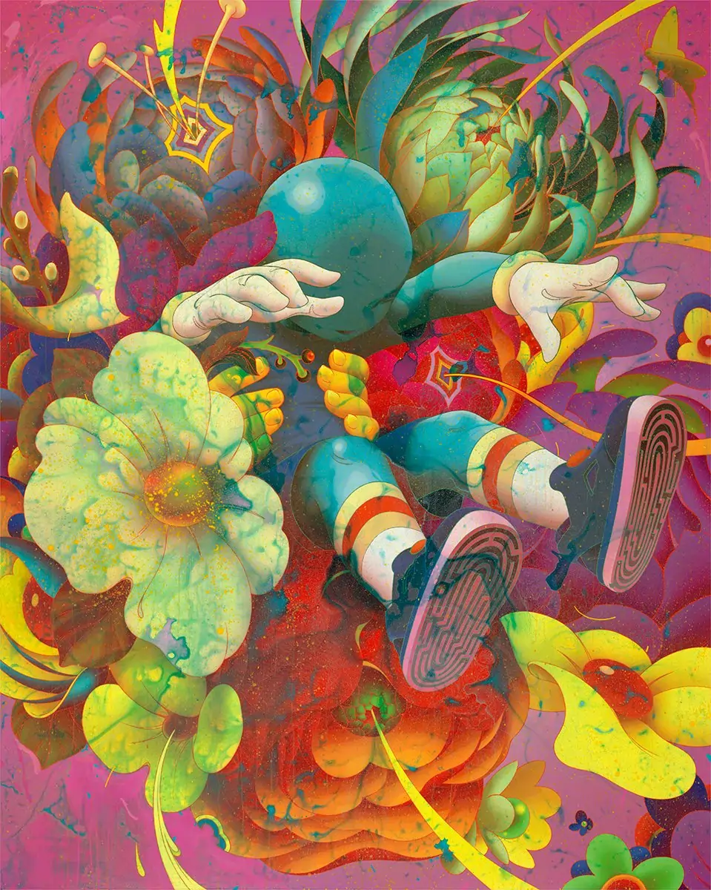

DESTACADO

BOUQUET II (2022)
"Bouquet II", de James Jean, retrata a un niño suspendido entre un estallido de flores y formas orgánicas, evocando un mundo onírico donde la inocencia y la naturaleza se funden en una imagen de transformación y belleza efímera.
VER MÁS